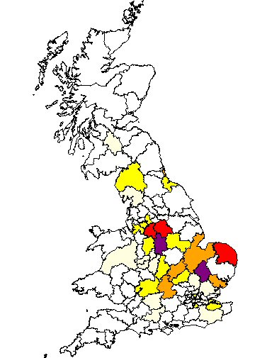

We have traced the Buntings back to William Bunting born in 1802. He and wife Mary settled in Mansfield, having thirteen children between 1826 and 1850.
Their eldest son Walter Bunting also became a plasterer. The Bunting family connect to the Noble tree through Mary Ann Bunting.
Return to Home